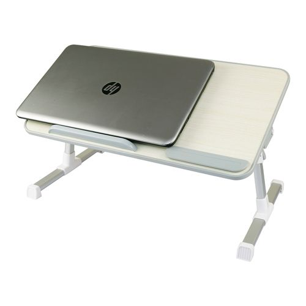

Software
Software refers to parts of the computer which do not have a material form, such as programs, data, protocols, etc. Software is that part of a computer system that consists of encoded information or computer instructions, in contrast to the physical hardware from which the system is built Computer software includes computer programs, libraries and related non-executable data, such as online documentation or digital media. It is often divided into system software and application software Computer hardware and software require each other and neither can be realistically used on its own. When software is stored in hardware that cannot easily be modified, such as with BIOS ROM in an IBM PC compatible computer, it is sometimes called "firmware".
.
The two main types of software are system software and application software. System software controls a computer’s internal functioning, chiefly through an operating system, and also controls such peripherals as monitors, printers, and storage devices. Application software, by contrast, directs the computer to execute commands given by the user and may be said to include any program that processes data for a user. Application software thus includes word processors, spreadsheets, database management, inventory and payroll programs, and many other “applications.” A third software category is that of network software, which coordinates communication between the computers linked in a network.
Software is typically stored on an external long-term memory device, such as a hard drive or magnetic diskette. When the program is in use, the computer reads it from the storage device and temporarily places the instructions in random access memory (RAM). The process of storing and then performing the instructions is called “running,” or “executing,” a program. By contrast, software programs and procedures that are permanently stored in a computer’s memory using a read-only (ROM) technology are called firmware, or “hard software.”
 |
computer: Computer software
Software denotes programs that run on computers. John Tukey, a statistician at Princeton University and Bell Laboratories, is generally credited with introducing the term in 1958 (as well as coining the word bit for binary |
 |
computer: Early microcomputer software
The first programs developed for the hobbyists’ microcomputers were games. With the early machines limited in graphic capabilities, most of these were text-based adventure or role-playing games. |
|  |
The Z4
In Germany, Konrad Zuse began construction of the Z4 in 1943 with funding from the Air Ministry. Like his Z3 (described in the section Konrad Zuse), the Z4 used electromechanical relays, in part because of the difficulty in acquiring the roughly 2,000 necessary vacuum tubes in wartime Germany. |
ㅤㅤ
ㅤㅤㅤㅤㅤㅤㅤㅤㅤㅤㅤㅤㅤㅤㅤㅤㅤ